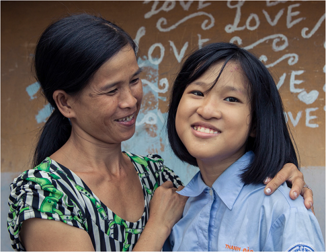
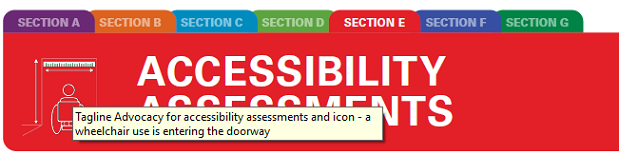

TOOLKIT ON ACCESSIBILITY

Tools to apply universal design across premises and programmes and promote access for all


2
Tools to apply universal design across premises and programmes and promote access for all

Tools to apply universal design across premises and programmes and promote access for all
© United Nations Children’s Fund (UNICEF) February 2022
Email: disabilities@unicef.org
Cover photo: © UNICEF/UN0215638/Viet Hung
Email: disabilities@unicef.org
Editor and copy editor: Fabienne Stassen, EditOr
Proof Layout and graphic design: Big Yellow Taxi, Inc.
Web designer: Elias Constantopedos
Accessible formats: Prashant Ranjan Verma
4The toolkit is divided into seven sections and one Toolbox:


SECTION F: ORGANIZATION OF ACCESSIBLE EVENTS: suggestions on how to organize accessible events

SECTION G: ACCESSIBILITY CHECKLISTS: 17 checklists to use during accessibility assessments

Dr Omar Abdi, UNICEF Deputy Executive Director, Programmes:
Hannan Sulieman, UNICEF Deputy Executive Director, Management:
6

The toolkit is divided into seven sections and one Toolbox:
To summarize, information can be used at different points in the accessibility journey, such as:
This toolkit contributes to the implementation of the United Nations Disability Inclusion Strategy and helps to achieve and exceed most of the strategy’s indicators: lack of physical accessibility, specifically recognized as one of the barriers to inclusion in Indicator 6 on Accessibility, 6.1 on Accessibility of conferences and events, Indicator 7 on Reasonable accommodation and Indicator 5 on Consultation with persons with disabilities. The toolkit helps to report on United Nations Country Team scorecards and to build the capacity of implementing partners on accessibility.

Convention on the Rights of Persons with Disabilities
The Convention on the Rights of Persons with Disabilities (CRPD) 1 is an international human rights treaty of the United Nations intended to protect the rights and dignity of persons with disabilities. It was adopted on 13 December 2006 and describes human rights frameworks linked to accessibility, aspects of universal design, reasonable accommodation and international standards for accessibility. UNICEF’s existing commitments and policies to promote accessibility are aligned with the CRPD.
In the 1980s, the American architect Ron Mace coined the term ‘universal design’, which means good design that benefits everyone. 2 Universal design is defined in the CRPD as “the design of products, environments, programmes and services to be usable by all people, to the greatest possible extent, without needing adaptation or specialized design” (article 2). 3
12Seven principles underpin the concept of universal design, summarized as follows:
Four steps ensure the accessibility continuum: reaching a facility; entering a facility; moving around a facility; and using specific features of a facility. 4 These align with the RECU methodology that stipulates that accessible facilities should be easy to reach, enter, circulate and use. 5
14 15Other considerations to promote inclusion include:
16For UNICEF programmes, ISO 21542 can be applied to all construction-related activities. While dimensions in the standard are geared primarily towards adults, it also recognizes that people across age levels have different needs, so it incorporates, for example, accessibility in toilets designed for children. In addition, accessibility for children is considered in this toolkit based on other existing guidelines and principles. 6
As part of the Sustainable Development Goal (SDG) framework, 7 accessibility of the built environment is referred to explicitly in the targets and indicators for:


Goal 11 – Make cities and human settlements inclusive, safe, resilient and sustainable

The New Urban Agenda emphasizes the importance of process and implementation in a “participatory manner”, which considers “innovative, resource-efficient, accessible, context-specific and culturally sensitive sustainable solutions”. 8
In 2018, as a follow-on to the Habitat III conference, the World Urban Forum in Malaysia issued the Kuala Lumpur Declaration, with an explicit paragraph on universal design, committing governments to “adopt accessibility and universal design as core principles into national, subnational and local action plans for implementing the New Urban Agenda through inclusive, accessible and participatory processes and consultations”. 9
During the twelfth Conference of States Parties to the Convention on the Rights of Persons with Disabilities, United Nations Secretary-General António Guterres launched the United Nations Disability Inclusion Strategy (UNDIS).
19This executive directive supplements the existing requirements for the accessibility of premises in Property and Equipment Policy, Supplement 6 – Guidelines for Premises Management and the UNICEF Greening and Accessibility Fund (GrAF) procedures. The GrAF was established in 2015, generated by a 3 per cent air travel surcharge, with 2 per cent of the fund to be used to finance eco-efficiency projects and 1 per cent to be used for accessibility projects (see also Section D of the toolkit).
20
Part 2 provides guidance on how to conduct the site visit during the physical assessment.
The accessibility checklists in Section G of this toolkit can be used by UNICEF staff and partners to:
This section offers seven general tips to support the process of preparing an assessment:
Basic tools and materials include:
This section provides tips on how to conduct the site visit for the accessibility assessment.
Section G of this toolkit includes a series of accessibility checklists that can be used to compare the site visit’s findings with appropriate accessibility requirements (national or international standards, according to the context).
31
The report template is available in the Annex to this document and in the Toolbox.
A standard assessment report includes:
The priorities can be established on the basis of such factors as:
It may be useful to consider a complexity rating, such as:
L: Low complexity, which may include easy actions to manage and implement
For UNICEF premises, it is worth considering whether there is scope to apply for a grant from the Greening and Accessibility Fund 10 and/or to work with other United Nations agencies to promote accessibility.
34A. Overview/purpose of the project/programme/premises: Education for all children in country X
B. Assessment/appraisal date and team: DD/MM/2022, Team of AB, CD, EF
C. Major findings and recommendations
E. Who is responsible for implementation?
F. Summary of potential resources (and materials) required, cost and time estimates
G. When: Proposed completion time frame
H. Monitoring: Validation and review process
36Findings (summary matrix: optional)
| Checklist/ room/area | To share/promote | Action/costs Recommendations | Status/ responsibility |
|---|---|---|---|
| Good practice | |||
| Checklists 1–4 compliant | Example of entrance to school BCD | Write up a case study | |
1. For more information, including the full text of the CRPD in multiple languages and the list of countries that have ratified it, see United Nations, Department of Economic and Social Affairs, Disability, Convention on the Rights of Persons with Disabilities (CRPD), United Nations, New York, 2006, <www.un.org/development/desa/disabilities/convention-on-the-rights-of-persons-with-disabilities.html> , accessed 7 September 2021. ↩︎
2. Ronald L. Mace Universal Design Institute (UDI), ‘A Brief History of Universal Design’, UDI, 2018, <www.udinstitute.org/ud-history> , accessed 7 September 2021. ↩︎
3. United Nations, Convention on the Rights of Persons with Disabilities, United Nations, New York, 2006, article 2, <www.un.org/development/desa/disabilities/convention-on-the-rights-of-persons-with-disabilities/article-2-definitions.html> , accessed 7 September 2021. ↩︎
4. These considerations are covered for each type of facility in the accessibility checklists ( Section G ). ↩︎
5. For more information on RECU, see Plantier-Royon, Eric, Priscille Geiser and Hugues Nouvellet, ‘Accessibility: How to design and promote an environment accessible to all’, Policy Brief 2, Handicap International (now Humanity for Inclusion), Lyon, 2009, <https://handicap-international.ch/sites/ch/ files/documents/files/accessibilite_anglais.pdf> , accessed 17 February 2022. ↩︎
6. See, for example, United Nations Children’s Fund, Accessible Components for the Built Environment: Technical Guidelines embracing Universal Design, UNICEF, New York, <https://docplayer. net/73698977-Accessible-components-for-the-built-environment-technical-guidelines-embracing- universal-design.html> , accessed 29 October 2021. ↩︎
7. For the complete set of SDGs, targets and indicators, see United Nations, Department of Economic and Social Affairs, Sustainable Development, ‘Make the SDGs a Reality’, United Nations, New York, <https://sustainabledevelopment.un.org> , accessed 29 October 2021. ↩︎
8. United Nations, United Nations Conference on Housing and Sustainable Urban Development, ‘New Urban Agenda’, United Nations, Ecuador, 2017, open PDF, paras. 37, 52, 53, 119, <http://habitat3.org/wp-content/uploads/NUA-English.pdf> , accessed 29 October 2021. ↩︎
9. United Nations, World Urban Forum, ‘Kuala Lumpur Declaration on Cities 2030’, United Nations, Kuala Lumpur, 13 February 2018, <https://unhabitat.org/sites/default/files/2018/04/Agenda-10-WUF9-KL-Declaration-English-1.pdf> , accessed 29 October 2021. ↩︎
10. See United Nations Environment Management Group, ‘UNICEF on its way to eco-efficiency’, EMG Secretariat, 20 June 2018, <https://unemg.org/unicef-on-its-way-to-eco-efficiency> , accessed 16 August 2021. ↩︎
11. Adapted from International Organization for Standardization, ‘ISO 21542:2011 Building construction – Accessibility and usability of the built environment’, Introduction and para. 3.2, <www.iso.org/obp/ui/ fr/#iso:std:iso:21542:ed-1:v1:en:sec:11> , accessed 16 August 2021. ↩︎
12. International Organization for Standardization, ‘ISO 21542:2011 Building construction – Accessibility and usability of the built environment, para. 3.4, https://www.iso.org/obp/ui/#iso:std:iso:21542:ed- 2:v1:en , accessed 16 August 2021. ↩︎
© United Nations Children’s Fund (UNICEF) February 2022
United Nations Plaza, New York, NY, 10017, USA
Email: disabilities@unicef.org
The accessibility toolkit is available at: https://accessibilitytoolkit.unicef.org/